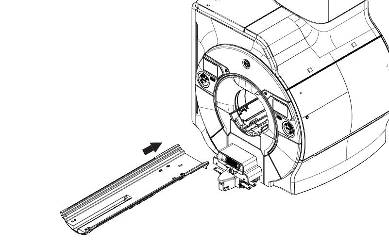
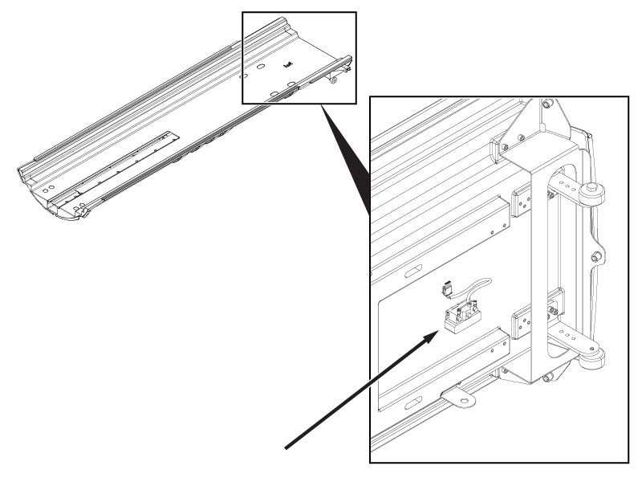
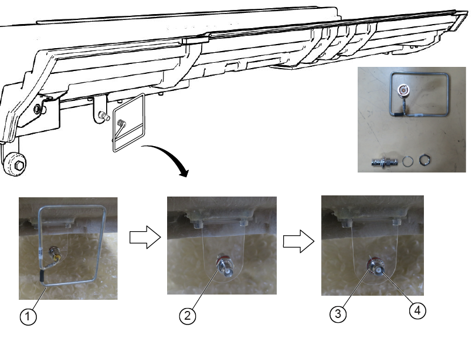
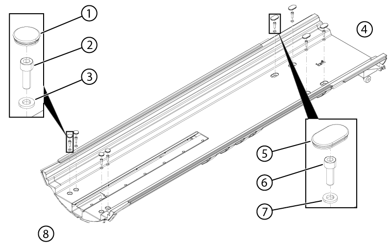

One Piece RTM Motus Bridge Assembly - RIO Enclosure
1
5948000-100
-
Procedure
From the patient end of the magnet, with a partner, lift the 1-piece bridge assembly into place, position the rollers on the rail, and slide the bridge assembly partially into the bore.
Figure 1. Position the 1-piece bridge

CAUTION
Risk of product damage
Risk of damage to the 1-piece bridge rollers
Do not push the bridge into the bore unless a second person lifts the bridge on the service end and gently lowers as it comes off the rails.
The second installer should move to the service end. From the patient end, slide the 1-piece bridge into the bore while the installer on the service ends lifts the bridge and carefully lowers the rollers as they come off the rails.
On the service end, connect cable M3507 to the end of the travel switch.
Figure 2. End of travel switch connector

On the service end, install the UTNS antenna assembly to the 1-piece bridge.
Position the BNC adapter on the bracket.
Install the washer.
Install the nut.
Figure 3. UTNS antenna components

1
BNC adapter
2
Washer
3
Nut
4
UTNS antenna
Install the eight washers, eight screws, and eight caps (four on each end) to secure the 1-piece bridge assembly.
Figure 4. 1-piece bridge hardware

1
Plastic cap
2
Screw
3
Washer
4
Service end
5
Plastic cap
6
Screw
7
Washer
8
Patient end
To determine the scan range configuration:
(For replacement procedures) Inspect the 1-piece bridge being replaced to determine if the hard stop support block is installed. Make sure the scan configuration is correctly set following the finalization procedures in Setting the patient table scan range configuration.